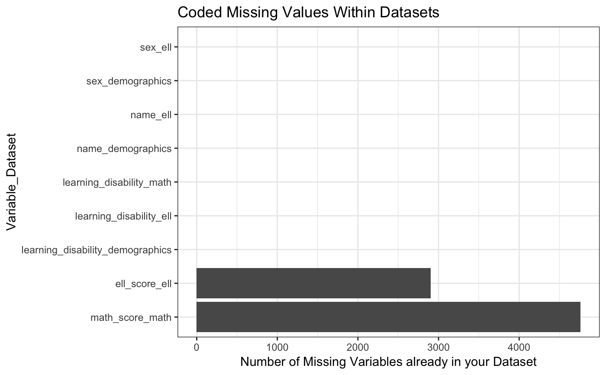
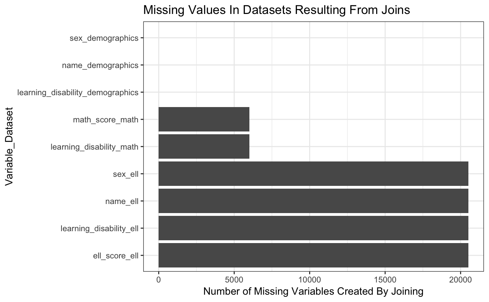

Get insight onto where missing values will enter when joining your data frames
Source:R/get_all_missing.r
get_all_missing.RdEnter data frames and a joining key and generate a table that shows you the variable, number of NA values in the data frames, and number of NA values introduced when full joining the data frames. Additionally, see this output in two different bar plots called 'Coded Missing Values Within Datasets' and 'Missing Values In Datasets Resulting From Joins'. This function enables you to specify as many data frames as you wish. You specify the keys, where each data frame must have at least one of the keys in it. The function gives insight into missing values and if they come from your current data or result from the join.
get_all_missing(..., df_names = NULL, keys)
Arguments
| ... | enter as many data frames as you would like |
|---|---|
| df_names | the data frame names |
| keys | the primary key in your data frames |
Examples
get_all_missing(demographics, math, ell, keys = c("student_id", "year"))#> [[1]] #> # A tibble: 9 x 3 #> variable coded_missing join_missing #> <chr> <int> <int> #> 1 name_demographics 0 0 #> 2 sex_demographics 0 0 #> 3 learning_disability_demographics 0 0 #> 4 learning_disability_math 0 6000 #> 5 math_score_math 4761 6000 #> 6 name_ell 0 20517 #> 7 sex_ell 0 20517 #> 8 learning_disability_ell 0 20517 #> 9 ell_score_ell 2904 20517 #> #> [[2]]#> #> [[3]]#>get_all_missing(list(demographics, math, ell), df_names = c("demographics", "math", "ell"), keys = c("student_id", "year"))#> [[1]] #> # A tibble: 9 x 3 #> variable coded_missing join_missing #> <chr> <int> <int> #> 1 name_demographics 0 0 #> 2 sex_demographics 0 0 #> 3 learning_disability_demographics 0 0 #> 4 learning_disability_math 0 6000 #> 5 math_score_math 4761 6000 #> 6 name_ell 0 20517 #> 7 sex_ell 0 20517 #> 8 learning_disability_ell 0 20517 #> 9 ell_score_ell 2904 20517 #> #> [[2]]#> #> [[3]]#>